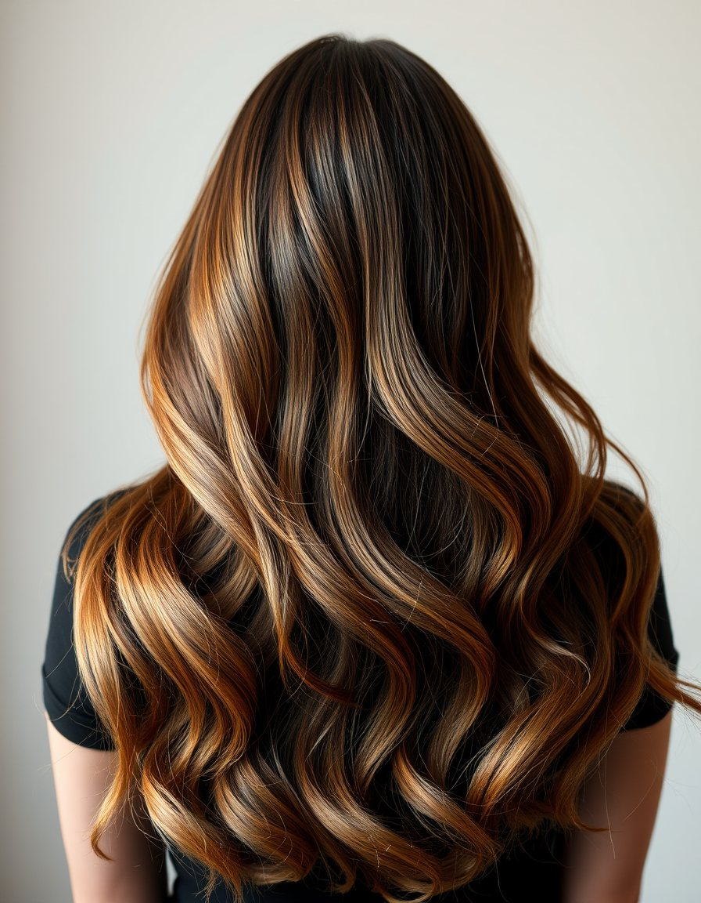
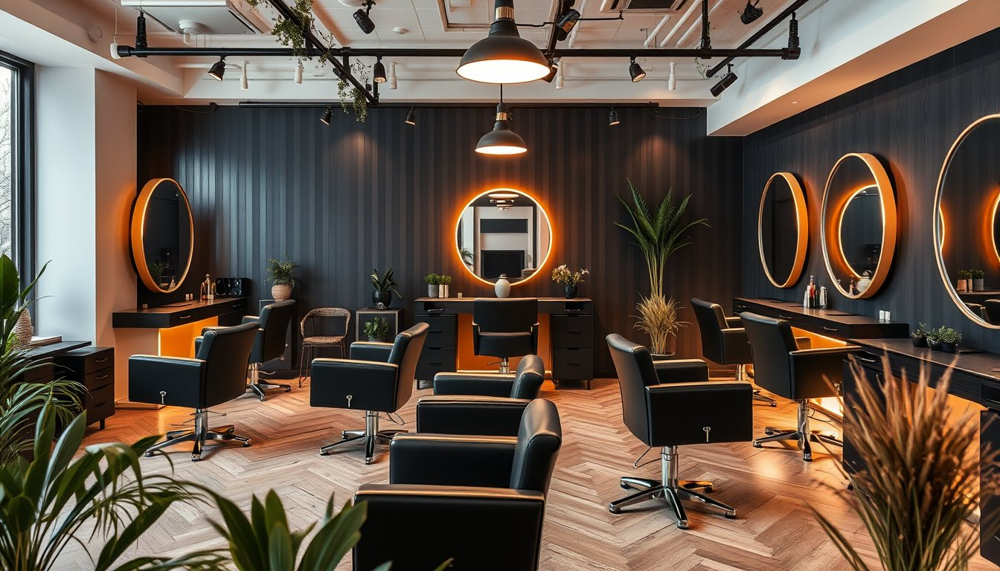
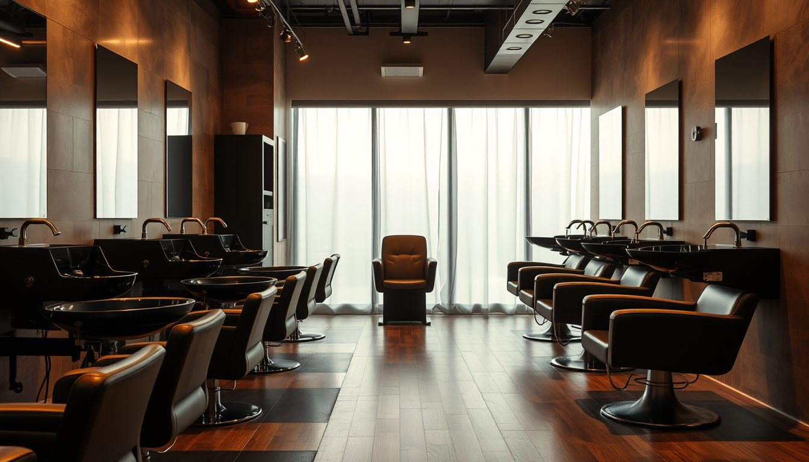
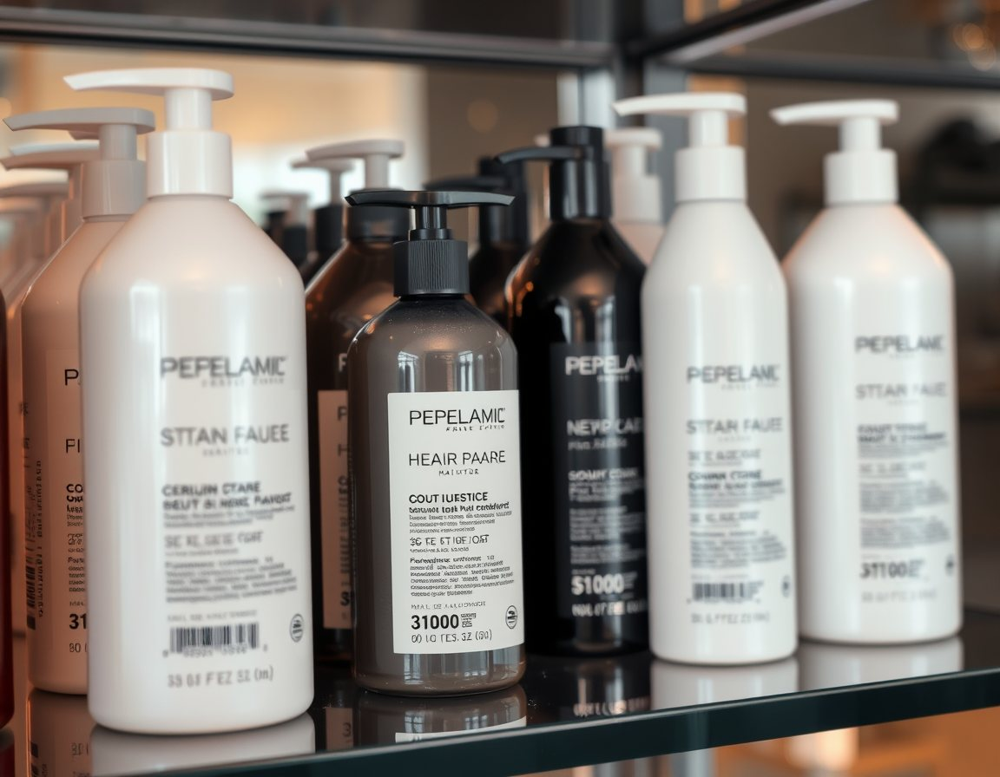

Karamel balyajSonbaharın rengi
Fön mü, dalga mı?Stilistlerimiz anlatıyor
Keratin sonrasıİlk 72 saat rehberi
Gelin provasıNeden bir ay önce?
Her hizmet bir ön görüşmeyle başlar: saçınızın geçmişini, rutininizi ve beklentinizi dinliyoruz.
Renk elle, dikey fırça darbeleriyle verilir. Güneşte açılmış gibi doğal geçişler.
Dipten uca yatay ve belirgin geçiş. Uçlar kökten net şekilde açıktır.
Yalnızca uzayan kökler boyanır; beyaz kapatma için ideal.



Renk işlemlerinden 48 saat önce ücretsiz alerji testi için uğramanızı rica ediyoruz.